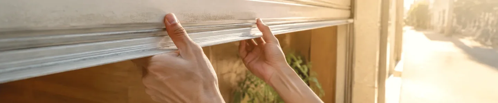

事業を、理解する。
診断とヒアリングで、目的や強み、届けたい相手を整理。まだ言葉になっていないことから伺います。
小さな事業のための、Web制作事務所。
決める前に、整理するところから。
あなたの事業に合う見せ方を見つけ、
必要な情報が、きちんと届くサイトへ。
Web診断36 · 登録不要 · 16問なら約2〜3分
01 / OUR APPROACH
誰に、何を届けたいか。そこを一緒に整理することで、
見た目にも、ページ構成にも、選ぶ理由が生まれます。
診断とヒアリングで、目的や強み、届けたい相手を整理。まだ言葉になっていないことから伺います。
サービス、料金、問い合わせ。読む人が知りたい順番で、必要な情報と導線を組み立てます。
手の中のスマホでも、机の上のPCでも。文字の読みやすさ、操作のしやすさを確かめます。
02 / WEB DIAGNOSIS 36
「好きなデザイン」の、その先へ。
4つの視点から、今の事業に必要な方向を整理します。
サービス内容や連絡先に、迷わずたどり着ける。
タイプの一例を見る ↗ブランド・魅力雰囲気や価値観から、事業の魅力が伝わる。
タイプの一例を見る ↗王道・安心見慣れた構成で、大切な情報を落ち着いて読める。
タイプの一例を見る ↗先進・新しさ余白、表現、動きに、今らしい感覚を取り入れる。
タイプの一例を見る ↗4つの視点を2つの軸にまとめた、36のサイトタイプ。
結果は、構成や配色を話し合うための手がかりです。
タイプに優劣はありません。心理・性格・経営を評価する診断ではなく、Webサイト設計の方向を整理する目安です。
03 / PLANS & PRICING
ページ数と、文章・画像をどこまで準備するか。
同じ条件で比べられる、4つの制作プランです。
PLAN 01
まずは、事業の窓口を。
PLAN 02
必要な情報を、すっきり。
PLAN 03
事業の全体像を、きちんと。
PLAN 04
伝える準備から、一緒に。
制作費は買い切り。税区分は公開前に確定します。納期は原稿・写真の提出後からの目安です。公開後の管理は任意の別契約となります。
診断やヒアリングから、ご希望と必要な情報を整理します。
作業内容・納期をご確認後に契約。着手金は制作費の50%です。
初稿を確認し、まとめていただいた修正内容を反映します。
最終確認・残金のお支払い後に公開、または納品します。

はい。事業のことと、今困っていることから教えてください。文章や写真がそろっていなくても、準備の進め方から相談できます。
必要ありません。結果を見るだけでも大丈夫です。診断では、氏名やメールアドレスの登録も不要です。
メールだけでの相談も可能です。話しながら整理したい場合は、60分の無料ヒアリングをお選びください。
ドメインやサーバー、外部サービスの利用料が別途必要になる場合があります。公開後の管理は任意の別契約です。追加作業は、事前に内容と金額を確認します。
LET’S TALK
相談は無料。制作するかどうかは、内容を確認してから決められます。